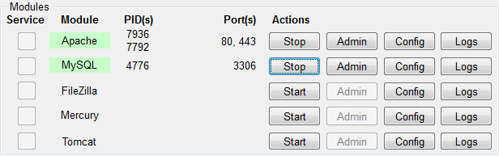
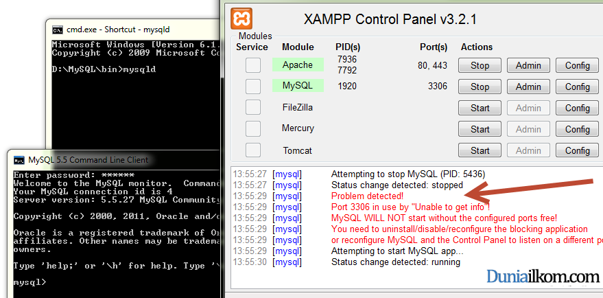
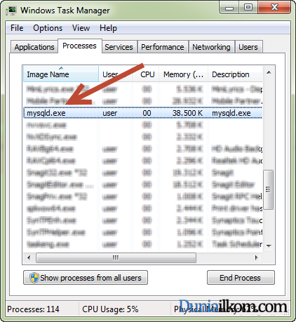
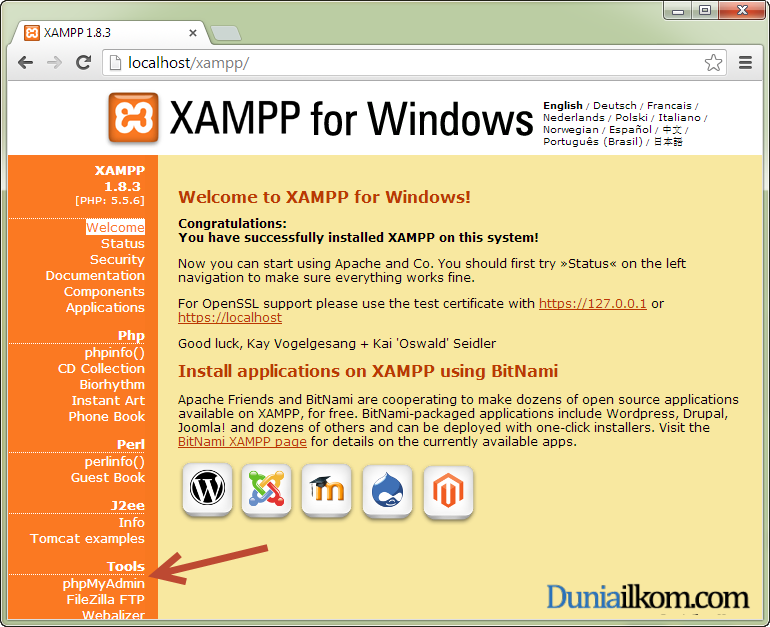
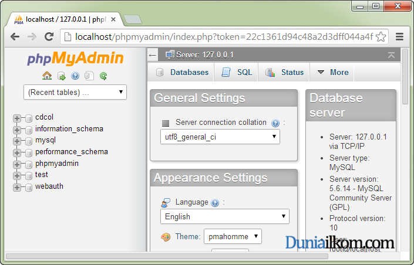
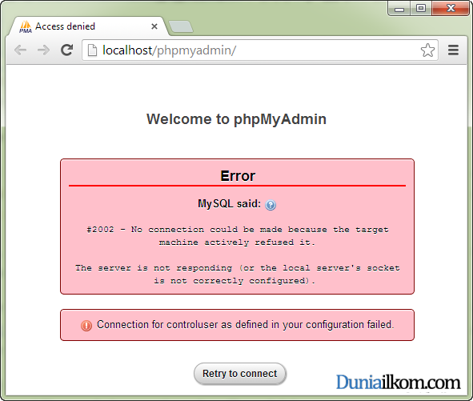
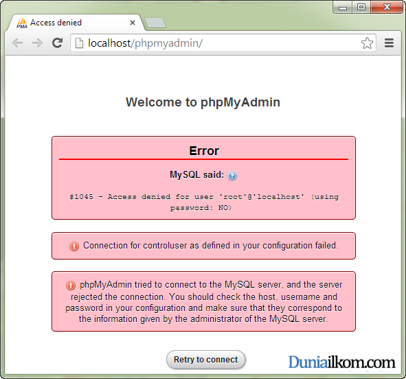

Tutorial PHP MySQL Part 1: Cara Menjalankan MySQL dan PHP menggunakan XAMPP
Syarat pertama untuk bisa membuat koneksi antara PHP dengan MySQL tentunya dengan menjalankan kedua aplikasi ini terlebih dahulu. Dalam tutorial belajar PHP MySQL bagian pertama ini, kita akan mempelajari cara menjalankan PHP dan MySQL menggunakan aplikasi XAMPP, maupun secara terpisah .
Cara Menjalankan PHP dan MySQL menggunakan XAMPP
PHP dijalankan dari web server Apache, dan jika anda mengikuti Tutorial PHP Dasar Untuk Pemula di duniailkom, maka di komputer anda telah terinstall aplikasi XAMPP.

Selain modul Apache, XAMPP juga memiliki paket bawaan MySQL Server. Untuk menjalankan keduanya, anda tinggal men-klik tombol Start pada jendela XAMPP Control Panel seperti gambar dibawah ini:

Jika tidak ada masalah, modul MySQL akan berwana hijau yang menandakan MySQL Server sudah berjalan. Sampai disini, Web Server Apache dan database MySQL sudah siap digunakan.
Cara Menjalankan MySQL dan PHP secara Terpisah
Jika anda telah mengikuti Tutorial MySQL Dasar di duniailkom, pada tutorial tersebut saya menginstall MySQL secara terpisah (bukan dari aplikasi XAMPP), kita juga bisa menggunakan aplikasi MySQL ini untuk diakses dari web server Apache yang berasal dari aplikasi XAMPP.
Namun, seperti yang telah kita bahas pada tutorial cara menjalankan MySQL Server, bahwa di dalam sebuah komputer hanya bisa berjalan 1 buah MySQL Server. Sehingga jika anda menemukan pesan error seperti gambar dibawah ini, berarti ada aplikasi MySQL Server yang sedang aktif.

Untuk memeriksa apakah MySQL Server sedang aktif atau tidak, bisa dilakukan melalui task manager. Silahkan buka task manager,dan cari proses dengan nama: mysqld.exe. Jika ditemukan, berarti MySQL Server telah berjalan di latar belakang.

Anda boleh menggunakan MySQL versi stand alone ini, atau mematikannya dan menggunakan MySQL versi bawaan XAMPP.
Cara Menguji Koneksi PHP MySQL Dengan Phpmyadmin
Untuk menguji apakah aplikasi PHP dapat mengakses database MySQL, kita bisa menggunakan aplikasi Phpmyadmin bawaan XAMPP.
Aplikasi Phpmyadmin adalah sebuah aplikasi manajemen database MySQL yang berbasis web. XAMPP menambahkan aplikasi ini untuk mempermudah pengaksesan database yang biasanya diakses menggunakan console, atau cmd Windows. Namun saya tidak akan membahas cara penggunaan aplikasi phpmyadmin pada tutorial kali ini. Kita hanya menggunakannya untuk mengecek koneksi dari aplikasi PHP ke MySQL.
Untuk masuk ke menu phpmyadmin, anda bisa mengetik alamat berikut pada web browser: http://localhost/phpmyadmin/. Atau bisa juga dari halaman localhost XAMPP, lalu cari menu phpmyadmin yang berada pada pojok kiri halaman localhost.

Jika anda menggunakan aplikasi MySQL bawaan XAMPP, dan apabila tidak ada masalah akan tampil halaman awal Phpmyadmin seperti gambar dibawah ini:

Tampilnya halaman tersebut menandakan bahwa PHP dan MySQL telah terhubung secara sempurna. Namun jika tampilan phpmyadmin seperti gambar berikut ini, maka dapat disimpulkan bahwa MySQL Server belum berjalan.

Jika anda mendapati tampilan tersebut, permasalahan terdapat pada aplikasi MySQL Server yang belum dijalankan. Silahkan jalankan aplikasi MySQL dari XAMPP Control Panel.
Apabila anda menggunakan aplikasi MySQL yang terpisah (bukan bawaan XAMPP), maka menu phpmyadmin seharusnya akan menjadi seperti gambar berikut:

Namun jangan khawatir, pesan error tersebut terjadi karena phpmyadmin mencoba masuk ke MySQL Server dengan user ’root’ dan tanpa password. Pesan error #1045 – Access denied for user ‘root’@’localhost’ (using password: NO) merupakan pesan error ketika kita salah memasukkan password untuk user root. Jika anda mengikuti tutorial MySQL di duniailkom, user root akan memiliki password ’qwerty’ dan bukan kosong, sehingga hal inilah yang menyebabkan tampilan error tersebut.
Tampilan error diatas sebenarnya berarti MySQL Server telah berjalan, dan bisa diakses dari PHP.
Jika MySQL Server dan Web Server Apache telah dijalankan, maka saatnya kita masuk ke dalam tutorial PHP MySQL berikutnya, yaitu mengenal jenis-jenis koneksi PHP dengan MySQL.